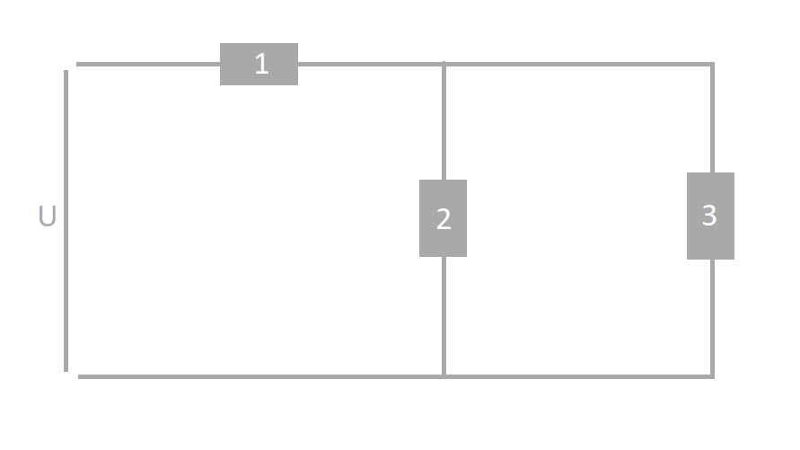

Un circuit électrique au sens matériel est un ensemble simple ou complexe de composants électriques ou électroniques, y compris des simples conducteurs, parcourus par un courant électrique. Au sens de la théorie des circuits, un circuit électrique est une abstraction des configurations matérielles, un agencement d'éléments définis par des relations mathématiques, reliés par des conducteurs idéaux.
La loi d'Ohm est une formule utilisée pour calculer la relation entre la tension, l'intensité et la résistance dans un circuit électrique. Elle s'écrit : U = R × I . U = tension aux bornes de la résistance, en volt (V). I = intensité qui traverse la résistance, en ampère (A). R = valeur de la résistance, en Ohm (Ω).
Un diviseur de courant est un montage électronique simple permettant d'obtenir un courant proportionnel à un autre courant. Le circuit est constitué de branches parallèles et s'étudie grâce aux lois de Kirchhoff et notamment à la loi des nœuds. Pour appliquer le diviseur de courant ayant déjà le courant total qui alimente le circuit on procède de la manière suivante : on multiplie le courant avec tous les dipôles autres que ceux que nous voulons déterminer son intensité qui circule a ces bornes, puis on le divise par la somme de toute ces dipôles.
Dans cette partie, je vais vous faciliter la résolution de ce circuit éléctrique. Pour cela, il suffit juste d'insérer les valeurs de U, R1, R2 et R3.